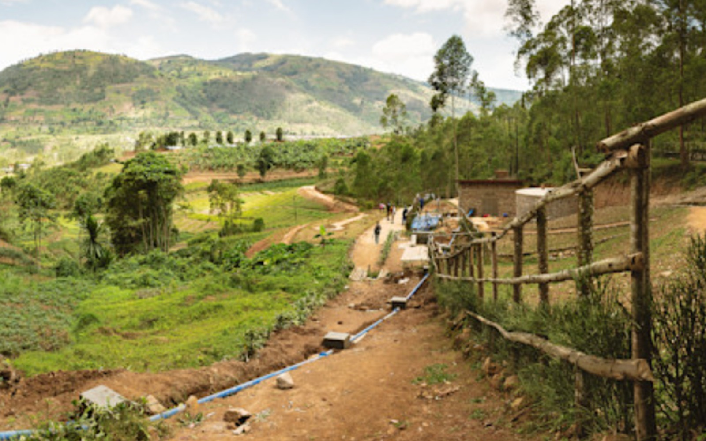
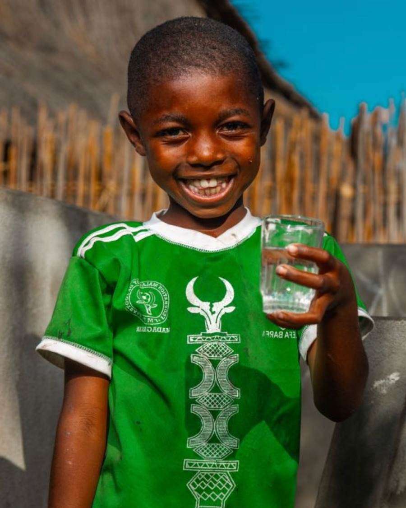
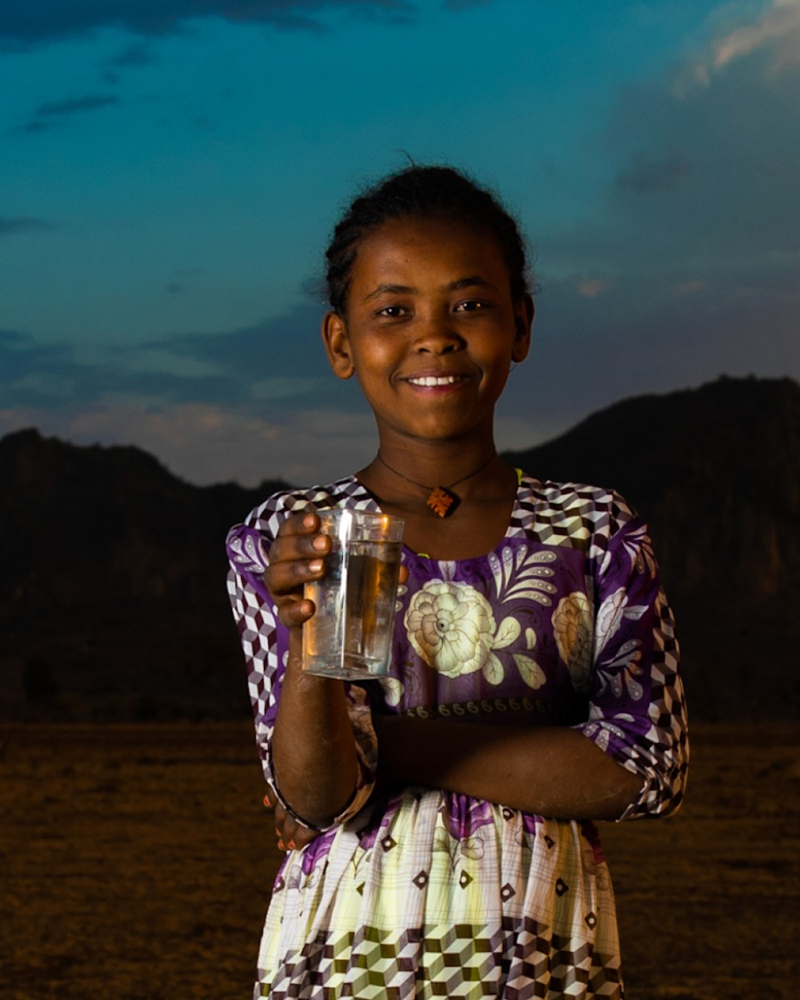
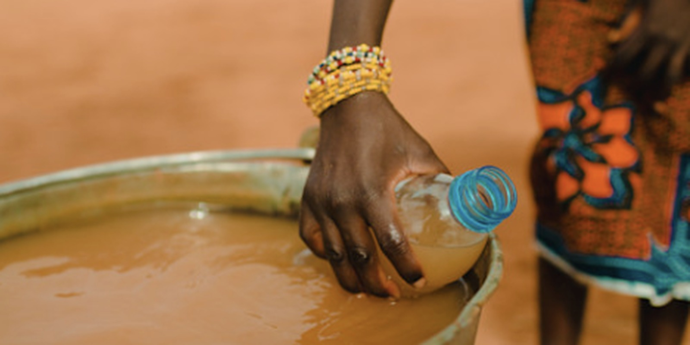
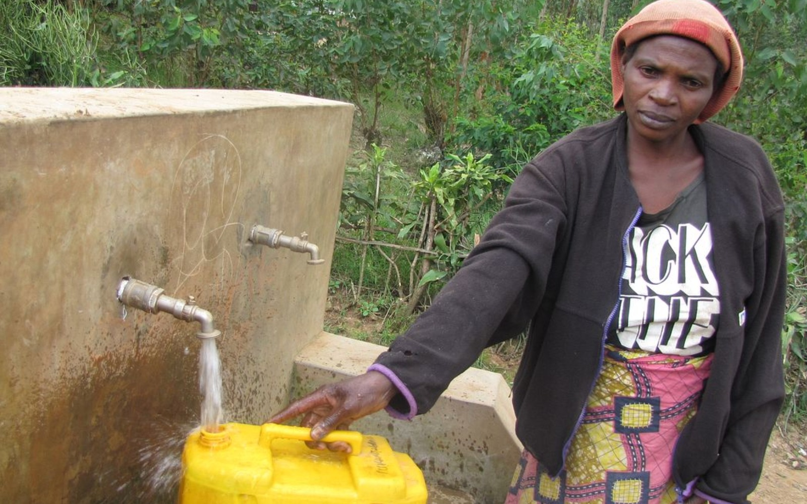

More than water.
AquaReach Initiative is a student-led, community-driven initiative founded in California's South Bay. Our mission is to educate people about important global issues and turn awareness into meaningful action.
From learning about a problem to doing something about it.
AquaReach began after its founder learned about the global water crisis and realized how easily access to clean water can be taken for granted. While studying Kevin Carter's famous photograph of a starving child in Sudan, the founder began thinking beyond the image itself and asking what happens when basic necessities like clean water are unavailable. That moment turned awareness into action and inspired AquaReach Initiative.
What began as a student-led effort in the South Bay has grown into a team of 50+ students. Today, AquaReach combines education, outreach, fundraising, research, and community engagement. We focus on engaging younger generations, but our mission is for everyone.

The global water crisis affects everyone.
Safe water is fundamental to health, education, dignity, and opportunity. Yet billions of people still lack safely managed water and sanitation.
people still lack safely managed drinking water.
people still lack safely managed sanitation.
hours women and girls spend collecting water each day in countries with available data.
preventable deaths each year are associated with unsafe water, sanitation, and hygiene.
Sources: UN-Water, World Water Development Report 2026; WHO/UNICEF Joint Monitoring Programme. Statistics are global estimates and may be updated as new data become available.
Our reach is growing.
raised through AquaReach fundraising efforts
students on our team
views across our digital outreach
our current charity: water campaign is live
AquaReach × charity: water
We fundraise through our official charity: water campaign rather than collecting donations directly through this website.
Supporting clean-water projects around the world.
Our partnership gives supporters a direct way to contribute while AquaReach focuses on education, outreach, and mobilizing our community.
View our official campaign →Clean water changes what is possible.




